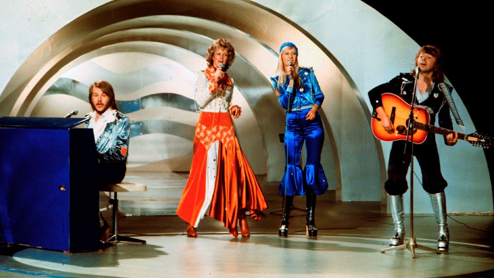
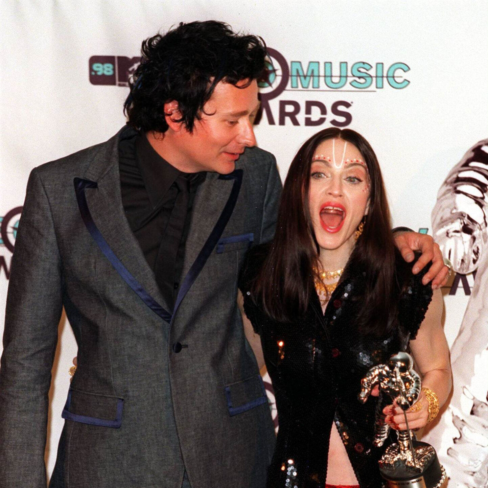

Sweden's musical history is one that can be rivalled by few. From huge artists like Aviici and ABBA, to lesser known songwriters like Max Martin and Thomas G:Son, Sweden's musical history is widespread. This section will detail the modern history of the nation, looking closely at how pop and folk have merged together to create a musical powerhouse.
Sweden's musical history, like many others, is steeped in culture and tradition. Throughout history, music played an important role in battles. The Swedish fiddle and nycklharp being important parts of music creation. By the turn on the mid-20th century however, pop music began to have more of an impact across the country. Pop music was not always popular however, with folk music, and even the national broadcaster being against what we now think as normal.
The timeline below starts in the 1960's, after the creation of the Eurovision Song Contest and Swedish Melodifestivalen but before their first victory. The timeline will detail wins and losses, and political moments, in the Swedish musical masterpiece.
1959
The beginnings of Melodifestivalen
After making their debut at Eurovision in 1958 and coming fourth, SVT (Sweden's broadcaster) adds a Eurovision selection to their show 'Säg det med musik'. The name given to this section became Eurovisionschlagern, svensk final (Eurovision Schlager, Swedish Final), but the winner didn't always go to Eurovision, only the song did.
The name Melodifestivalen (Melody Festival) was adopted in 1967.
1964
Zetturland launches Swedish music.
Monica Zetterlund and the Bill Evans Trio record one of the most critically acclaimed Swedish albums of history, ‘Waltz for Debby’. The album launches a career for Zetterlund, an artist celebrated by the likes of ABBA and Zara Larsson.
60's
Sweden vs pop.
Sweden’s relationship with pop was not what it is now. Originally, music was based in the culture and folk, with rock bands coming out in the 60s against the establishment, and specifically against music competitions like Eurovision.
1974
Waterloo takes Eurovision.
Swedish pop goes international through ABBA winning the Eurovision Song Contest in Brighton. ‘Waterloo’ has since been named the greatest Eurovision song by BBC Viewers. In the same year Bjorn Skifs’ song ‘Hooked on a Feeling’ becomes the first Swedish song to hit number one on the US Billboard Chart.

Img Src/Getty Images
1975
Sweden hosts Eurovision, just.
Eurovision was not popular when it came to Sweden. Left-wing groups in the country were not happy with the commercialisation of music, and ran their own contest Alternativfestivalen (The Alternative Festival) during the week of Eurovision 1975. Money was also a problem due to the costs of the show, the country took a year out from Eurovision after this and the pressure against the broadcaster SR.
1982
ABBA is no more.
Less than 10 years after their Eurovision victory, and after many nationwide and worldwide tours, the band went their separate ways. This came after many issues with relationships the band was sadly no more, and wouldn’t be seen together again for many years.
1986
Europe begins its final countdown.
Swedish rock band Europe release their song which hit number one in 25 countries. ‘The Final Countdown’ remains an infamous song across the world.
1990
It really must be love.
‘It Must Have Been Love’ takes Roxette to number one in America for the 4th time. The duo’s song has become a hit worldwide and remained so ever since, with the song becoming a part of movies like Pretty Women.
1992
Cherion Studios make their mark.
Sweden’s impact on international music cannot be understated, with Cherion Studios being the home of many producers and writers who would work on some of the worlds most famous music. Some of the biggest hits for Britney Spears, the Backstreet Boys, NSYNC and Westlife came from these studios. They closed in 2000 after the death of founder Denniz PoP, the impact of the studio would remain to the present day.
1993
Ace of Base make it big in America.
The band from Gothenburg sees their debut album ‘The Sign’ hit the top of the US charts. A mix of reggae and Euro techno, it sat for 6 months in the top 3 of the US album charts, selling 21 million copies. It remains the best-selling Swedish act album, only being surpassed recently by the ‘ABBA Gold’ collection.
1998
Sweden a 'Ray of Light' for music videos.
Swedish video director Jonas Akerlund wins a Grammy for Madonna’s new single ‘Ray of Light’ videos. He also won a further 5 awards at the MTV VMA’s. Sweden’s musical history is not all about the singing, but also the directions and videos.

Img Src/EPC Music
2000
Oops...they did it again!
Swedish songwriter Max Martin brings ‘Oops!...I did it Again’ to the top of the US Billboard charts. To now, Max Martin has written 27 Billboard number 1s, only being surpassed by Paul McCarney’s 32.
2000
Oasis take a chance on Sweden.
Soundtrack of Our Lives toured the US with Oasis, much name-checked by Noel Gallagher. The Gothenburg based band sadly struggled to connect with audiences on the tour.
2005
‘Waterloo’ is the best Eurovision song in history.
As part of the 50th anniversary celebrations of the Eurovision Song Contest, the public voted ABBA’s song as their favourite, and as the best in history.
2008
Spotify, heard of it before?
Started by Daniel Ek in Stockholm, Spotify changed the world of music listening forever. Spotify helped revolutionise an industry struggling with file-sharing and piracy to introduce mass-market streaming for the first time to be so successful. Since, Spotify has grown worldwide with … listeners and allowed artists to share their music with ease.
Img Src/Spotify
2011
Avicii goes levels with ‘Levels’.
At 22, Avicii creates radio hits and his beats took him from clubs to arenas worldwide, breaking the barrier between rave and concert. In 2023, Avicii became the first Swedish artist to surpass 2 billion streams with ‘Wake Me Up’ reaching this honour.
2013
YouTube gives Yung Lean a big break
Spotify wasn’t the only place for Swedish artists to spread their music, but on YouTube and Soundcloud. Rapper, Yung Lean, took the world of rap by storm at just 16. Now collaborating with artists like Frank Ocean and Travis Scott, making them one of the most hailed creative artists.
2013
The world “Love’s it”.
Swedish Duo Icona Pop reached number one on the UK singles chart, and top 10 on Billboard, through their song ‘I Love It’. At the same time, Tove Lo broke through the US charts with her song ‘Habits (Stay High)’ charting at number 3.
2016
Zara Larsson for football.
Since releasing her EP in 2013, Zara Larsson’s career only grew worldwide. ‘This One’s for You’ was performed by Zara with French DJ David Guetta as the official song of the 2016 Euro’s. Her 2017 album ‘So Good’ would then go on to produce eight singles, and charted number 13 on the Billboard Hot 100.
2019
Robyn takes over New York.
Madison Square Garden saw a sold out concert by ‘Dancing on My Own’ star Robyn. Her tune is ranked 20th by the Rolling Stone in the best songs on all time.
2020
Sweden take Eurovision worldwide through Netflix
Eurovision Song Contest: The Story of Fire Saga went live on Netflix in a year that saw the main contest cancelled due to Covid. The film’s title song ‘Husavik’ was sung by Molly Sanden, using the stage name My Marianne. 2 Swedes wrote the song as part of a trio with an American, ‘Husavik’ was nominated for Best Original Song at the Oscars in 2021.
2021
ABBA returns for a Voyage
40 years after their final album in 1981, ABBA returned to record ‘Voyage’ to critical acclaim. They took it one step further this year, creating a live show with ABBAtars, digital representations of themselves. This show is still running live in a purpose-built arena in London, with plans to take it home to Stockholm.
2023
Loreen makes it seven
Loreen wins Eurovision for a second time, only the 2nd person to ever do this after Jonny Logan, meaning Sweden has won the prestigious contest seven times. This makes them the joint most successful country with Ireland. Sweden went on to host the contest in Malmo, the city last hosting in 2013.
2024
Ludwig Goransson becomes a two-time Oscar winner
The Swedish composer won an Oscar, Golden Globe and BAFTA for his score of Oppenheimer (2023). He won his first Oscar for his score in Black Panther (2018), something which also won him a Grammy.
If you want to check out more about these topics, check the impacts section of this website. In the impacts page, you can read about ABBA and their impact worldwide, Avicii, how Swedish songwriters have had a worldwide impact, and the Eurovision Song Contest, where it will also look into Melodifestivalen.